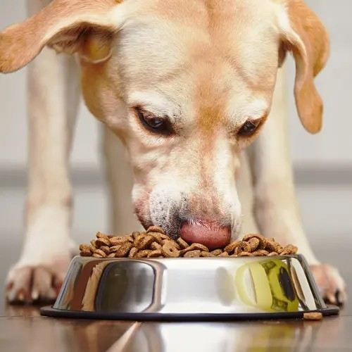

American Kennel Club
"Unfortunately, as dogs get older, they can experience changes to their health and mental faculties. Some senior dogs show signs of cognitive impairment akin to human Alzheimer's disease. This condition, known as cognitive dysfunction syndrome in dogs, causes issues such as disorientation, restlessness or lethargy, pooping or peeing in the house, and changes in sleep patterns."
"Senior dogs can also develop tumors in their pituitary glands, or occasionally their adrenal glands, which leads to excess production of the hormone cortisol. This condition is known as Cushing's disease, and early signs include excessive thirst and frequent urination. As the illness progresses, you may see weakness, loss of muscle mass, skin lesions, hair loss, obesity, and a lack of energy."

WebMD
"Whether you buy your dog food or make it yourself, your dog needs a balanced diet to stay healthy. That includes a mix of:
Proteins
Carbohydrates
Fats
Vitamins
Minerals
Water
To make sure the dog food you buy has the right mix of nutrients, look for the words "complete and balanced nutrition" on the label."